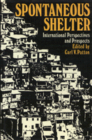

Focuses on the problem of providing shelter in underdeveloped countries
Focuses on the problem of providing shelter in underdeveloped countries


 Focuses on the problem of providing shelter in underdeveloped countries
Focuses on the problem of providing shelter in underdeveloped countries

|  |
Spontaneous ShelterInternational Perspectives and Prospectsedited by Carl V. Pattoncloth EAN: 978-0-87722-507-2 (ISBN: 0-87722-507-9) |
Using cross-national political, economic, and environmental comparisons as well as case studies from all parts of the world, this volume focuses on the increasing problem of providing shelter in underdeveloped countries, the innovative solutions that have been applied to the problem, and the prospects for the future. Spontaneous Shelter examines the contemporary and emerging issues that face homeless people in the Third World and suggests policy actions that can be taken. Providing middle-class as well as poverty-level examples, and considering environmental issues, the contributors use case materials, photographs, and drawings to clarify the policy agenda for basic shelter provision.
1. Evolution of Third World Shelter Policies – Elizabeth Kubale Palmer and Carl V. Patton
2. Geographic Perspectives on Spontaneous Shelter – W. Donald McTaggert
3. Spontaneous Settlements as Vernacular Design – Amos Rapoport
4. Self-Help Housing Technology – David Evan Glasser
5. Environmental Issues in Spontaneous Settlements – G. William Page
6. Informal Settlement in Latin America and Its Policy Implications – Ernest R. Alexander
7. The Growing Housing Crisis in Ecuador – David Evan Glasser
8. Meeting Shelter Needs in Indonesia – Carl V. Patton and Leksono Probo Subano
9. Hong Kong�s Floating Settlements – Bruce Taylor
10. Low-Income Settlements in Monrovia – Liberia-Linda Lacey and Stephen Emanuel Owusu
11. Commercialized Rental Housing in Nairobi – Kenya-Philip Amis
12. Abusivismo and the Gorgate of Rome – Albert Guttenberg
13. Squatter Housing in Yugoslavia – Boris Pleskovic
14. Economic Issues and the Progressive Housing Development Model – Eric Hansen and Justin Williams
15. The Role of the State in Sheltering the Urban Poor – Howard Handelman
16. Prospects for the Future – Carl V. Patton
Carl V. Patton is Dean of the School of Architecture and Urban Planning at the University of Wisconsin, Milwaukee.
Urban Studies
Political Science and Public Policy
© 2015 Temple University. All Rights Reserved. This page: http://www.temple.edu/tempress/titles/525_reg.html.